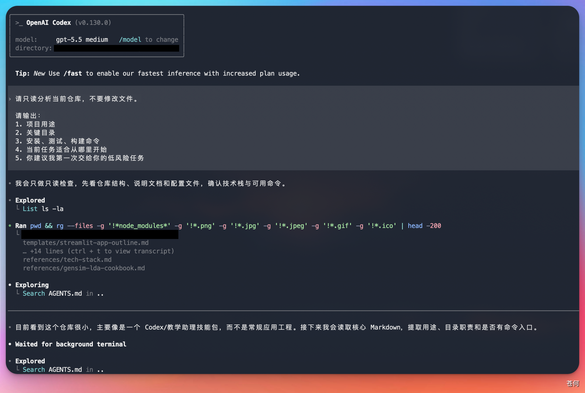
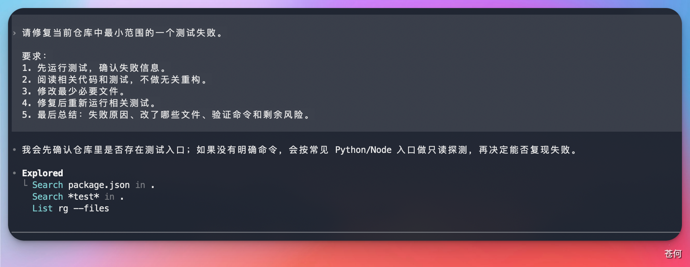
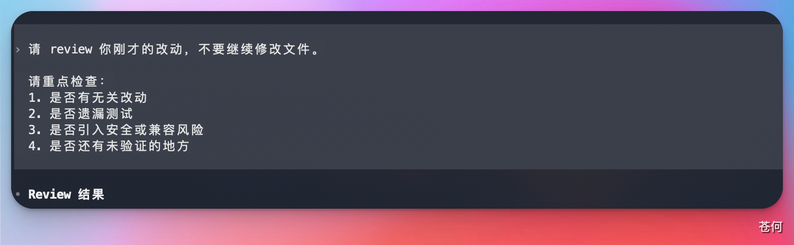

13 CLI 与 IDE
第一次让 Codex 改代码
第一次实战不要选择“重构整个项目”。选择一个小、可验证、失败也容易回滚的任务，先建立你和 Codex 的协作节奏。
本站同步：本节已同步为站内教程，可直接阅读；账号、套餐、权限和界面以实际显示为准。
来源：CodexGuide 原文。原页面标注 MIT Licensed；原图与说明按页面内容保留。
第一次让 Codex 改代码
第一次实战不要选择“重构整个项目”。选择一个小、可验证、失败也容易回滚的任务，先建立你和 Codex 的协作节奏。
💡 最后核对 官方资料最后核对日期：2026-05-27。本文参考 Codex CLI features、openai/codex getting started、AGENTS.md guide 与 Codex security。
选择第一个任务
适合新手：
- 修复一个文案错别字。
- 给一个纯函数补测试。
- 更新 README 里的过期命令。
- 解释一个小模块，并补充必要注释。
- 修复一个已经有失败测试覆盖的 bug。
- 为文档站补一段截图占位说明。
暂时避开：
- 大规模架构重构。
- 跨多个服务的迁移。
- 没有测试的核心业务逻辑改动。
- 涉及生产凭据、账单、权限和删除数据的操作。
- 需要同时修改十几个文件的需求。
第一步：只读建图
先让 Codex 理解仓库：
请只读分析当前仓库，不要修改文件。
请输出：
1. 项目用途
2. 关键目录
3. 安装、测试、构建命令
4. 当前任务适合从哪里开始
5. 你建议我第一次交给你的低风险任务

第二步：给出小任务
推荐复制这个模板：
请修复当前仓库中最小范围的一个测试失败。
要求：
1. 先运行测试，确认失败信息。
2. 阅读相关代码和测试，不做无关重构。
3. 修改最少必要文件。
4. 修复后重新运行相关测试。
5. 最后总结：失败原因、改了哪些文件、验证命令和剩余风险。
如果任务是文档：
请更新 [文档文件] 中关于 [主题] 的说明。
要求：
1. 先读取相关官方资料和现有文档结构。
2. 保持中文教程风格，避免整段翻译官方原文。
3. 涉及操作步骤时添加截图占位。
4. 修改后运行文档站构建。
5. 最后列出来源链接和需要人工补图的位置。

第三步：观察过程
重点观察五件事：
| 观察点 | 说明 |
|---|---|
| 是否先读上下文 | 好结果通常来自充分阅读相关文件 |
| 是否控制范围 | 第一次任务不追求顺手重构 |
| 是否解释命令 | 命令执行前应说明目的 |
| 是否运行验证 | 修改完成后要跑相关测试或构建 |
| 是否说明风险 | 没能验证的部分要如实记录 |
第四步：检查 diff
完成后自己再看一遍：
git diff
可以让 Codex 自查：
请 review 你刚才的改动，不要继续修改文件。
请重点检查：
1. 是否有无关改动
2. 是否遗漏测试
3. 是否引入安全或兼容风险
4. 是否还有未验证的地方

第五步：提交前记录
提交前让 Codex 给出一段摘要：
请用提交前摘要格式输出：
- 改动目标
- 修改文件
- 验证命令
- 验证结果
- 剩余风险
- 建议 commit message
如果结果满意，再提交：
git add .
git commit -m "fix: resolve failing test"
第一次失败怎么办
| 失败现象 | 处理方式 |
|---|---|
| 改动太大 | 让 Codex 停下，只保留最小修复思路 |
| 测试跑不起来 | 先让它解释环境缺口和命令来源 |
| 方向不对 | 回到只读分析，让它列出文件依据 |
| 输出太泛 | 要求按文件、命令、风险分段输出 |
| 误改无关文件 | 用 git diff 确认，再手动决定保留或丢弃 |
完成标准
第一次实战完成后，你应该拿到：
- 一个很小的 diff。
- 一条可复现的验证命令。
- 一段清楚的改动摘要。
- 一个可复用的任务模板。
- 对 Codex 权限和审批的初步理解。
下一步继续读：了解 Codex 基本组成。